[CakePHP] MVCフレームワークのCakeをインストールする方法
こんにちは。明月です。
今まで、Reflectionやspl_autoload_register、Smarty、.htaccessなどを説明しましたが、それは全てPHPのMVCフレームワークを構成するための準備作業だと言えます。
CakeとはPHP側で有名なフレームワークです。JavaだとSpring、C#だとMVC Frameworkと似ているな概念のMVCフレームワークです。
link - https://cakephp.org
大勢方がCakeフレームワークがどんなフレームワークより使いやすいし、様々機能があってセキュリティやデータ管理などが強いといいますが、個人的にJavaとC#のフレームワークに馴れているからかな、以外に複雑ですね。
実はこの投稿を作成しながらもずいぶん迷ういました。一応、目標として、インストールまで完了してブラウザに「Hello world」を出力することで始まります。
Cakeフレームワークを使うためにはいくつかのモジュールを設定(extension)しなければならないです。
php.iniを確認しましょう。
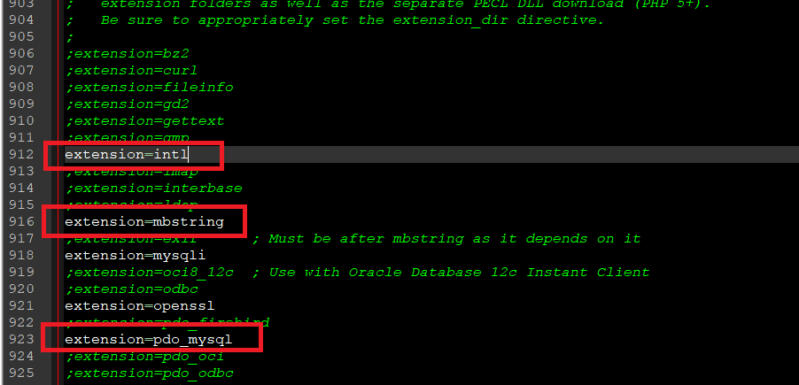
上の３つのモジュールのコメント(;)を解除されていることを確認しなければならないです。
解除されているのを確認したらcomposerでCakeフレームワークをダウンロードしましょう。
link - [PHP] Composer設定
composer create-project --prefer-dist cakephp/app
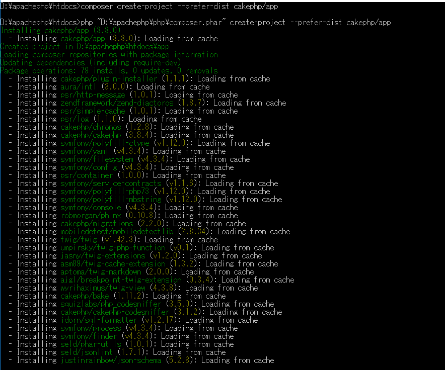
私の場合は一回ダウンロードした状況なので「Loading from cache」で表示されます。初めにダウンロードするとライブラリが少しありますので、時間がかかります。
フォルダを見ればappフォルダがあることを確認できます。私の場合はrootで作業するつもりなのでappフォルダにあるファイルを全てrootフォルダに移動します。
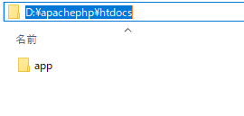
そして.githubフォルダとappフォルダは必要ないので削除しましょう。
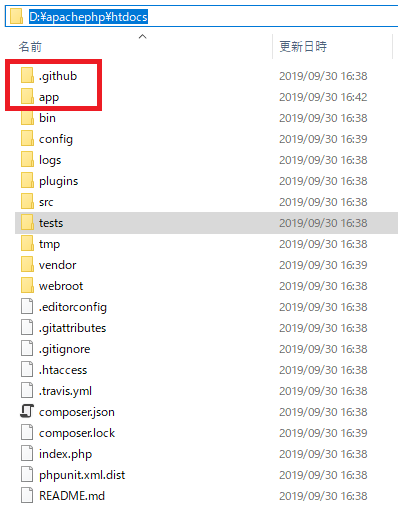
そしてCakeフレームワークもビューのテンプレートがありますが、我々はSmartyテンプレートに変わりましょう。
(Cakeのテンプレートは別にphpスクリプトファイルと差がないです。)
composer.jsonのrequireにsmartyライブラリを追加しましょう。
link - [PHP] PHPのコーディング領域とデザイン領域を分離するテンプレートライブラリ Smarty
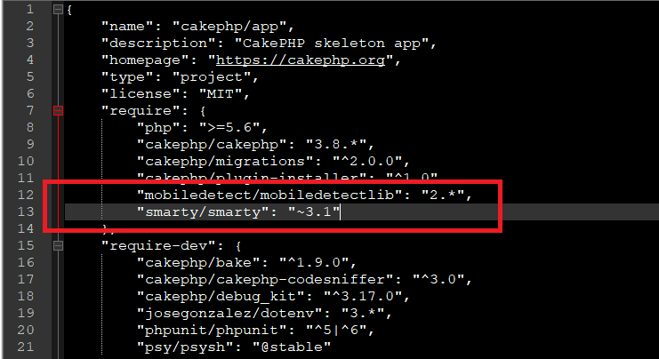
そのあとでcomposer updateをしましょう。
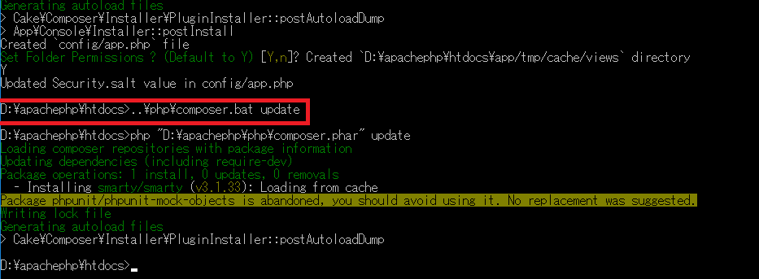
ここでCakeフレームワークを使うための準備は完了しました。使う前に簡単な構造的な説明と初期設定に関して調べましょう。
フォルダ構造をみれば主に使うフォルダは「config」、「src」、「webroot」フォルダがあります。
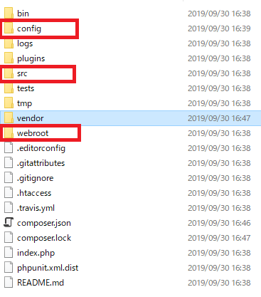
configフォルダはCakeフレームワークの設定ファイルがあるところです。route設定やデータベース接続設定などがあります。
srcフォルダはController(仕様ソース)とModelソース、Viewソースがあるところです。
webrootフォルダはJavascriptファイル、CSSファイルなどのファイルがあります。Response側のrootはwebrootに設定されています。
configフォルダにroutes.phpファイルあります。
routes.phpはRequestによってControllerクラスを呼出すクラスです。
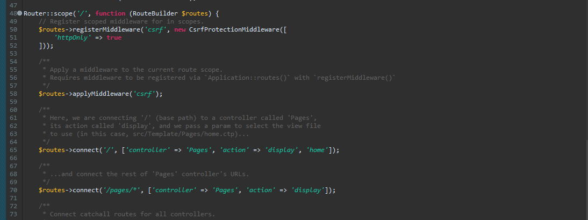
初期設定は「/」に要請されている場合、ControllerはPages、Actionは「display」に設定されています。つまりControllerはPagesControllerを割当てしてActionでdisplay関数を呼出すことです。
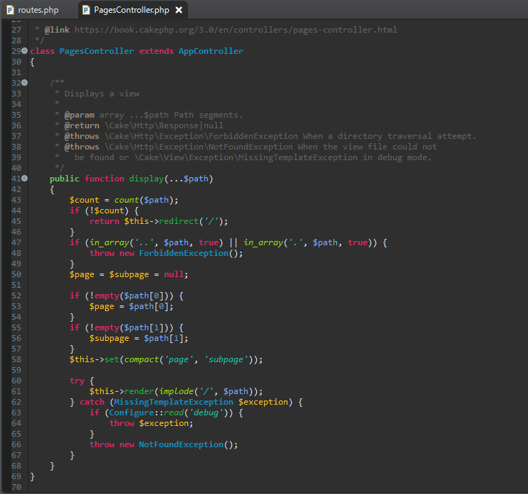
私の場合は上のroutesを少し変更します。
...
// Request URLを受取る。
$URL = $_SERVER["REQUEST_URI"];
// パラメータがある場合、(「?」が含めている場合。)
if(strpos($URL,"?") > -1) {
// Query String パラメータと分離する。
$URL = substr($URL,0,strpos($URL,"?"));
}
// ディレクトリ単位で分離する。
$router = explode ("/", $URL);
$controller = "";
$action = "";
// ディレクトリ表現が３つ未満の場合、例:「localhost/Home」
if(count($router) < 3) {
// Actionの基本値は「index」に設定する。
$action = "index";
} else {
// あれば、Action設定
$action = $router[2];
unset($router[2]);
}
// ディレクトリ表現が２つ未満の場合、例:「localhost」
if(count($router) < 2 || trim($router[1]) === "") {
// Controllerの基本値は「Home」に設定する。
$controller = "Home";
} else {
// あれば、Controller設定
$controller = $router[1];
unset($router[1]);
}
// 全てのページは上の規則に動く。
// 例:「localhost/Pages/Get」の場合はControllerが「Pages」になってActionが「Get」になる。
// PagesControllerを割当してGetメソッドを呼出す。
$routes->connect('*', ['controller' => $controller, 'action' => $action]);
...
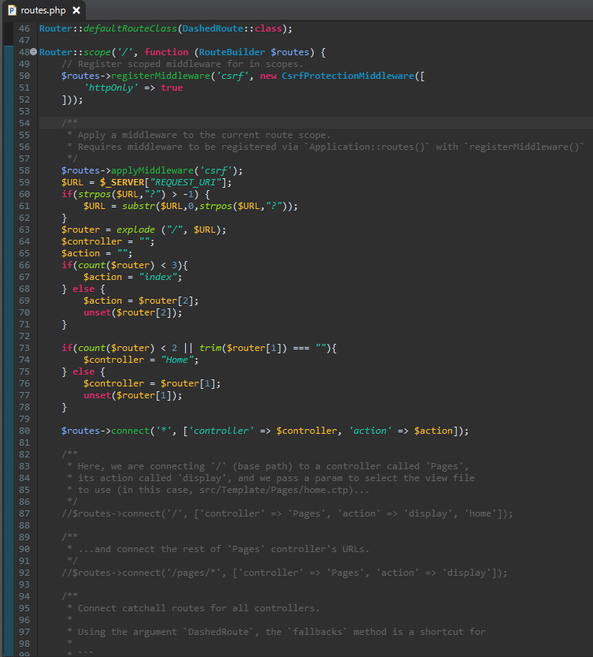
既存のソースは全てコメントしました。$_SERVERからRequest URLを受け取ってディレクトリパターンによってControllerとActionの呼出す部分を修正しました。
上のパターンはC#のMVC Frameworkを真似しましたが、他のパターンにしてもよいです。
ControllerとActionの基本値は「Home」、「index」になっています。でも「localhost/Pages/Get」に要請があればconnect関数を利用してPagesContollerのGet関数を呼出します。
これからHomeControllerクラスを作成しましょう。
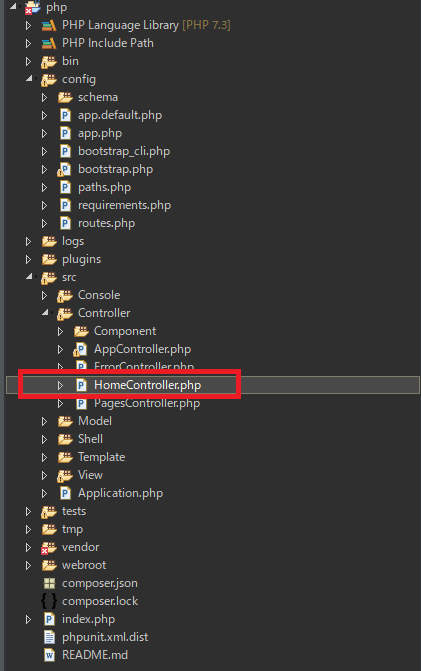
<?php
// App\Controllerのパッケージに設定する。
namespace App\Controller;
// CakeControllerクラスのAppControllerを継承する。
class HomeController extends AppController {
// index関数 (url - /localhost/Home/index)
public function index(...$path) {
// Viewにデータを渡す(キーはdata)
$this->set('data', "hello world");
}
}
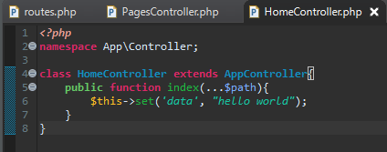
上のindexクラスはウェブブラウザから「localhost/」や「localhost/Home/index」に要請するとroutes関数が呼ばれます。
routes関数からHomeContollerのindex関数を呼出します。
index関数でset関数してビューにdataキーで「hello world」値を格納します。
これからControlからViewを呼出してビューを作成しなければならないです。
Controllerを探す関数で「routes」ならViewを探す関数は「AppView」クラスがあります。
AppViewクラスは「src/View」フォルダにあります。
<?php
// App\Viewパッケージ
namespace App\View;
// パッケージ使用宣言
use Cake\View\View;
use Cake\Network\Request;
use Cake\Network\Response;
use Cake\Event\EventManager;
use \Smarty;
// Viewクラスを継承
class AppView extends View {
public function initialize() { }
// Smartyを設定するためのメンバー変数。
protected $_smarty = null;
//コンストラクタ
public function __construct(Request $request = null, Response $response = null, EventManager $eventManager = null, array $viewOptions = []) {
// Smarty設定
$this->_smarty = new Smarty();
$this->_smarty->compile_dir = $_SERVER ["DOCUMENT_ROOT"].'/Smarty/templates_c';
$this->_smarty->cache_dir = $_SERVER ["DOCUMENT_ROOT"].'/Smarty/cache';
$this->_smarty->config_dir = $_SERVER ["DOCUMENT_ROOT"]. '/Smarty/configs';
$this->_smarty->error_reporting = 'E_ALL & ~E_NOTICE';
$this->_smarty->debugging = true;
$this->_smarty->caching = 0;
$this->_smarty->clearCompiledTemplate();
parent::__construct($request, $response, $eventManager, $viewOptions);
}
protected function _evaluate($viewFile, $dataForView) {
// Controllerでviewを呼出す時にviewにデータを渡す処理。
foreach ($dataForView as $key => $val) {
$this->_smarty->assign($key, $val);
}
$this->_smarty->assignByRef('this', $this);
// エラーが発生すれば、Smartyじゃなく、Cake Templateに変更してCakeエラー処理ページがでるように設定
if(@$dataForView["error"] !== null) {
return parent::_evaluate($viewFile, $dataForView);
}
return $this->_smarty->fetch($viewFile);
}
}
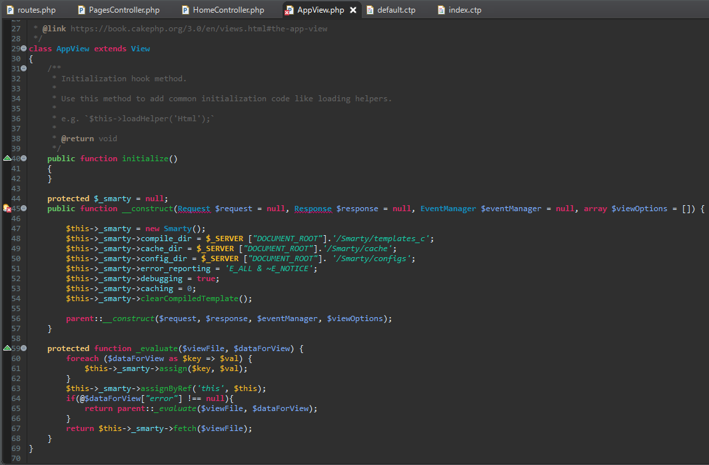
イメージではEclipseのエラーがありますが、EclipseのPHP解析機能のバグなので無視してもよいです。
AppViewはControllerからViewを呼出す前にデータ設定する部分です。
既存Cake TemplateからSmartyに変更しました。
これからViewソースを修正しましょう。
ViewソースはTemplateフォルダの中にあります。一応、そのまま使うとエラーが発生します。
なぜなら、Cake Templateで作成しているからです。先にLayoutのページを修正しましょう。
<!DOCTYPE html>
<html>
<head><title>Example</title></head>
<body>
{$this->Flash->render()}
<div class="container clearfix">
<!-- 実際のViewページが表示するところ -->
{$this->fetch('content')}
</div>
<footer></footer>
</body>
</html>
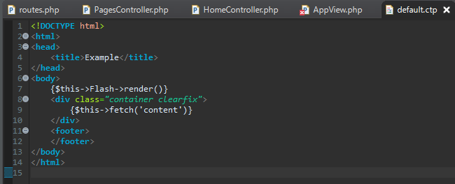
このレイアウトはC#のマスターページと同じ概念です。Htmlファイルが作成されることはマスターページが呼ばれて中にViewのページが入ることの形です。
Viewページ作成します。
TemplateフォルダにHomeフォルダがありません。なのでHomeフォルダから生成して「index.ctp」ファイルを生成しましょう。
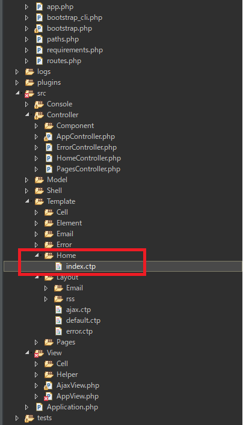
index.ctlにはControllerから渡してもらった「data」をViewで作成するようにコードを作成しましょう。
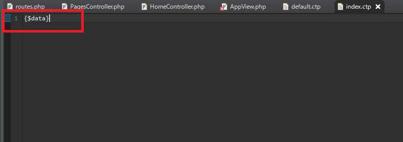
ここまで設定したらブラウザ画面にHello Worldをでるように準備が終わりました。
ブラウザに「localhost」のURLで接続しましょう。
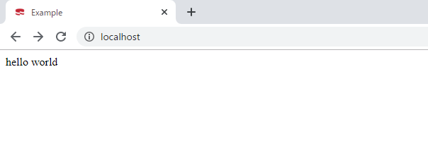
画面上に「Hello world」が表示されました。
今回は設定してないURLで接続しましょう。
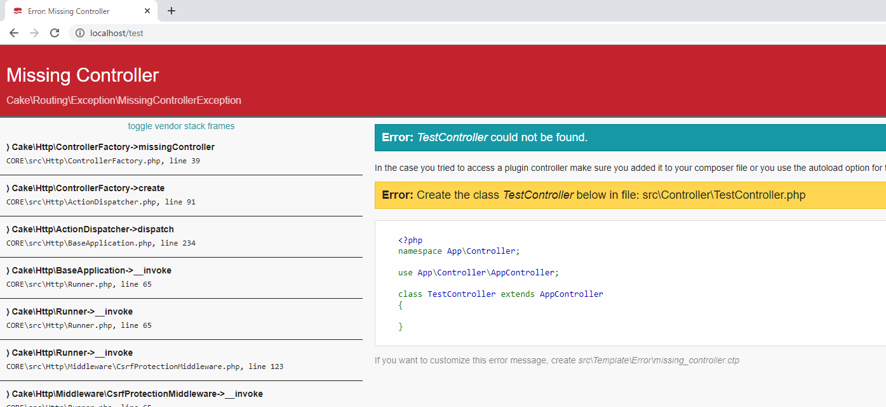
「/Test」に接続するとページがないというメッセージが表示します。上のページはCake Templateの画面ですが、$dataForView["error"]のnullチェックで既存Cake Template画面がでるように設定したことです。
link - https://github.com/yukikikuchi/cakephp3-smartyview
これから一つずつCakeを分析してしましょう。
- [CakePHP] Transactionを使う方法とEntityクラスを利用してInsert、Update、Deleteする方法2020/02/19 03:00:00
- [CakePHP] ORMのテーブルFetch設定2020/02/18 03:00:00
- [CakePHP] Cakeフレームワークでデータベースに接続する時に使うQuery式とEntityクラス、Tableクラス、ResultSet2020/02/17 08:16:23
- [CakePHP] データベース(MariaDB(Mysql))を接続する方法2020/02/14 03:00:00
- [PHP] namespaceとuse2020/02/13 03:00:00
- [CakePHP] RequestとResponseに関して2020/02/12 03:00:02
- [CakePHP] PHPのCakeからAjax要請がある時、jsonタイプ(json_encode関数)でResponseする方法とControllerでViewを選択する方法2020/02/08 03:00:00
- [CakePHP] MVCフレームワークのCakeをインストールする方法2020/02/07 03:00:02
- [PHP] 自動require及びincludeをする方法(spl_autoload_register)2020/02/05 03:00:00
- [PHP] 匿名関数(ラムダ式)とクロージャ(closure)2020/02/04 03:00:00
- [PHP] PHPのコーディング領域とデザイン領域を分離するテンプレートライブラリ Smarty2020/02/02 03:00:00
- [PHP] Reflection - Variable編2020/02/01 03:00:00
- [PHP] Reflection - Method編2020/01/31 03:00:00
- [PHP] Reflection - Class編2020/01/30 03:00:00
- [PHP] エラーページ処理方法(追加: ob_cleanとdie関数使用方法)2020/01/29 03:00:00
- [Design pattern] 1-5. プロトタイプパターン(Prototype pattern)2021/10/22 19:35:45
- [Project design] プログラム検証とテスト - Unitテスト2021/10/22 19:34:09
- [C#] 57. コーティング規約2021/10/21 18:57:02
- [C#] 56. 値の初期化及び基本データ値(default)を設定する方法、そして原始データのnull処理、?と??の使い方2021/10/21 18:54:41
- [C#] 55.namespaceとusing、そしてpartialの使い方2021/10/21 18:51:39
- [C#] 54. Reflection機能を使い方 - Attribute2021/10/20 19:29:31
- [Project design] プログラム制作(コーディング) - クラス作成方法2021/10/20 19:28:09
- [C#] 53. Reflection機能を使い方 - Propertyとevent2021/10/19 21:02:58
- [Project design] プログラム制作(コーディング) - 関数作成方法2021/10/19 21:01:32
- [CentOs] ジェンキンス(Jenkins)をインストールする方法2021/10/18 18:28:58
- [Project design] 詳細設計(インターフェース設計と抽象化作業)2021/10/18 18:23:15
- [Project design] 基本設計(画面設計とDB設計)2021/10/17 21:21:11
- [Design pattern] 1-4. デザインパターンの抽象ファクトリーパターン(Abstract factory pattern)2021/10/15 19:31:03
- [Project design] 要件定義(要求事項整理)2021/10/15 19:28:58
- [C#] 52. Reflection機能を使い方 - Variable2021/10/15 19:27:37